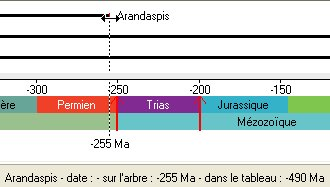
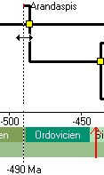
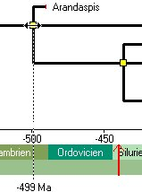
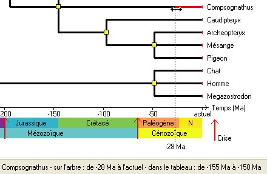
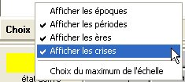

Dater
DaterIl s'agit d'introduire la dimension du temps de manière plus explicite qu'avec les arbres cladistiques.
Dater
Il s'agit
d'introduire la dimension du temps de manière plus explicite
qu'avec les arbres cladistiques.
Cette activité n'est accessible qu'à partir des activités Établir des parentés (collège ou lycée). La structure de l'arbre cladistique est envoyée à la fenêtre de datation avec une représentation horizontale permettant d'introduire une échelle de temps.

Exemple de déplacement d'un taxon : le curseur et la ligne d'information aident au positionnement.
 
Remarque : lorsque le noeud est situé sous une partie de l'étiquette du taxon, il n'est pas accessible à la souris. Commencer par déplacer le taxon.

Lorsque le positionnement est terminé, faire vérifier l'arbre.

Remarque : si le positionnement ne peut être assez précis, étendre horizontalement la fenêtre de datation.
Un menu donne des options d'affichage qui concernent essentiellement l'échelle des temps géologiques.

Si des documents complémentaires sont disponibles, un bouton
permet de les atteindre.
{kind=link}